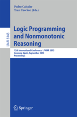
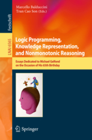
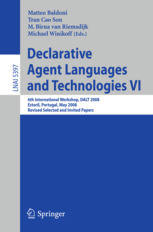
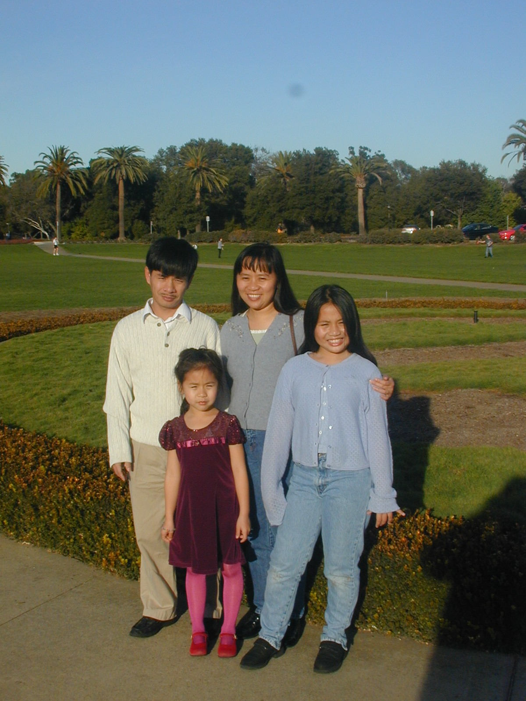
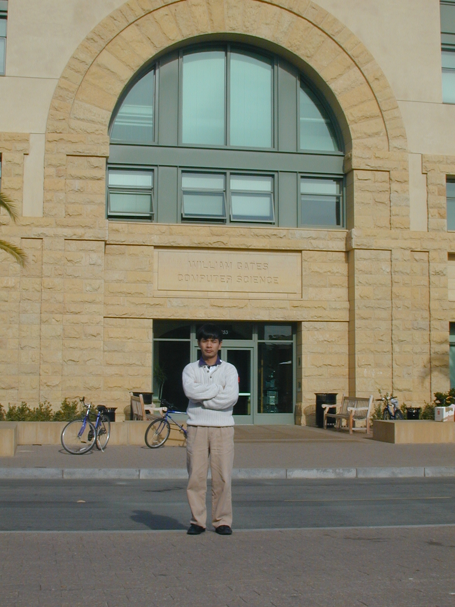
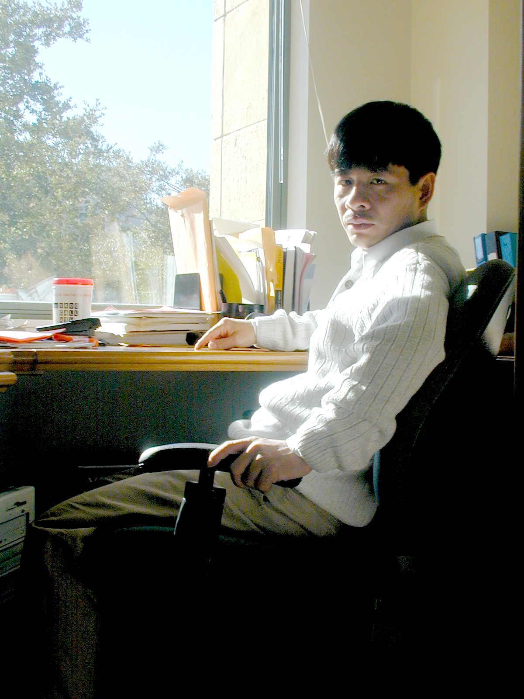
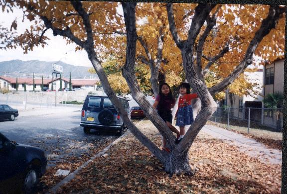
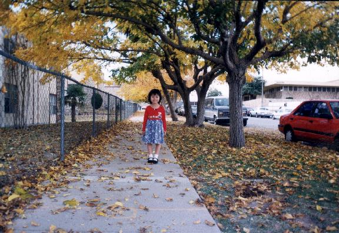
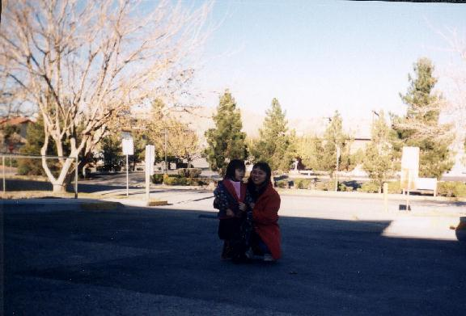

Welcome to my homepage! I am a Professor in the Department of Computer Science at NMSU and director of the Knowledge Representation, Logic, and Advanced Programming Laboratory (KLAP). My research investigates fundamental principles of Artificial Intelligence, including Knowledge Representation & Reasoning, Answer Set Programming, Conformant & Epistemic Planning, Autonomous Multi-Agent Systems, and Explainable AI. I am honored to be a recipient of the KR 2026 Test of Time Award and the ICLP 2026 20 Years Test-of-Time Award.
Core themes and research directions pursued at the KLAP Laboratory
Formulating domain-independent conformant and contingent planners under incomplete information using disjunctive belief states (DNF, CNF, Prime Implicates).
Declarative semantics, Answer Set Programming (ASP), Epistemic Logic Programs, Nonmonotonic Reasoning, and Formal Argumentation frameworks.
Distributed Constraint Optimization (DCOP), Epistemic Forward Search in Multi-Agent Domains, Goal Recognition Design, and Multi-Agent Pathfinding (MAPF).
Explainable Planning (XAIP) using ASP, Natural Language Generation from Ontologies, Web Services composition, and Healthcare AI applications.
Open-source conformant planners, belief state solvers, and ASP tools developed at KLAP
Conformant Planning using 0-approximation and goal splitting techniques. CpA handles static causal laws (domain constraints), while CpA(H) won the Best Non-Observable Non-Deterministic Planner award at IPC 2008.
Conformant and contingent planners leveraging disjunctive representations of belief states (DNF, CNF, Prime Implicates) for efficient transition function evaluations under uncertainty.
Generate-and-Complete approach for computing conformant plans using classical planners. Combines domain-structure analysis with LAMA planner. Best Student Paper Award winner at ICAPS 2012.
Educational presentations given at top AI conferences and summer schools
Autumn School on Logic Programming.
Agency, Causality, Commonsense and Deception. Joint tutorial with Chitta Baral.
Joint tutorial with Roman Barták, Philipp Obermeier, Torsten Schaub, and Roni Stern.
Joint tutorial with Enrico Pontelli and Marcello Balduccini.
Specification and Implementation Issues in Epistemic Planning.
Bridging Reasoning About Actions & Changes and Conformant Planning.
Declarative programming semantics and applications in AI.
Recognizing long-term impact and seminal contributions to Knowledge Representation & Logic Programming
Awarded for the seminal paper: "Adapting Golog for Composition of Semantic Web Services" (published in KR 2002).
View DetailsAwarded for the influential paper: "Justifications for Logic Programs Under Answer Set Semantics".
View DetailsComplete list of publications, journal papers, conference proceedings, and book chapters
Current lab members, postdoctoral scholars, and alumni who graduated from KLAP
Ph.D. 2007 → Microsoft Research
Ph.D. 2012 → Knexus Research
Ph.D. 2013 → Vinh University
Ph.D. 2013 → Apple
Ph.D. 2013 → CTO, Logistic Manager in Ho Chi Minh City, Vietnam
Ph.D. 2018 → Oracle
Ph.D. 2019 → Syracus University
Ph.D. 2021 → Growth Protocol
Ph.D. 2021 → Viome
Ph.D. 2024 → Growth Protocol
Ph.D. 2025 → Sustainable Developer, Thailand
Ph.D. 2026 → Cal State Bakersfield
M.Sc. 2024
M.Sc. 2024
M.Sc. 2019
M.Sc. 2019
M.Sc. 2018
M.Sc. 2018
M.Sc. 2018
M.Sc. 2018
M.Sc. 2018
M.Sc. 2018
M.Sc. 2016
M.Sc. 2016
M.Sc. 2014
M.Sc. 2012
M.Sc. 2011
M.Sc. 2011
M.Sc. 2010
M.Sc. 2007
M.Sc. 2006
M.Sc. 2006
M.Sc. 2005
M.Sc. 2005
M.Sc. 2005
M.Sc. 2004
M.Sc. 2003
M.Sc. 2003
M.Sc. 2002
University of Roehampton, London
Indeed.com
Idaho National Lab
Growth Protocol
Ph.D. Candidate
Ph.D. Candidate
Ph.D. Candidate
Edited Springer volumes and conference organization leadership

LNAI 8148, Springer
with Pedro Cabalar
LNAI 8143, Springer
with J. Leite et al.

LNAI 6565, Springer
with M. Balduccini

LNAI 5397, Springer
with M. Baldoni et al.
LNAI 4897, Springer
with M. Baldoni et al.
Memories from Stanford KSL, UTEP, family, and favorite academic links






{kind=link}
{kind=link}